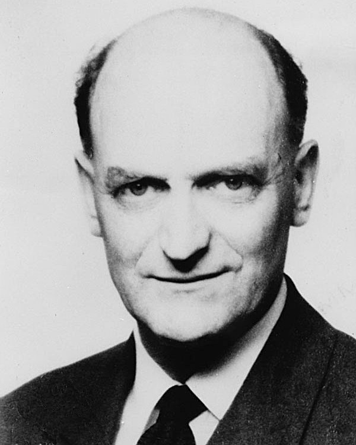
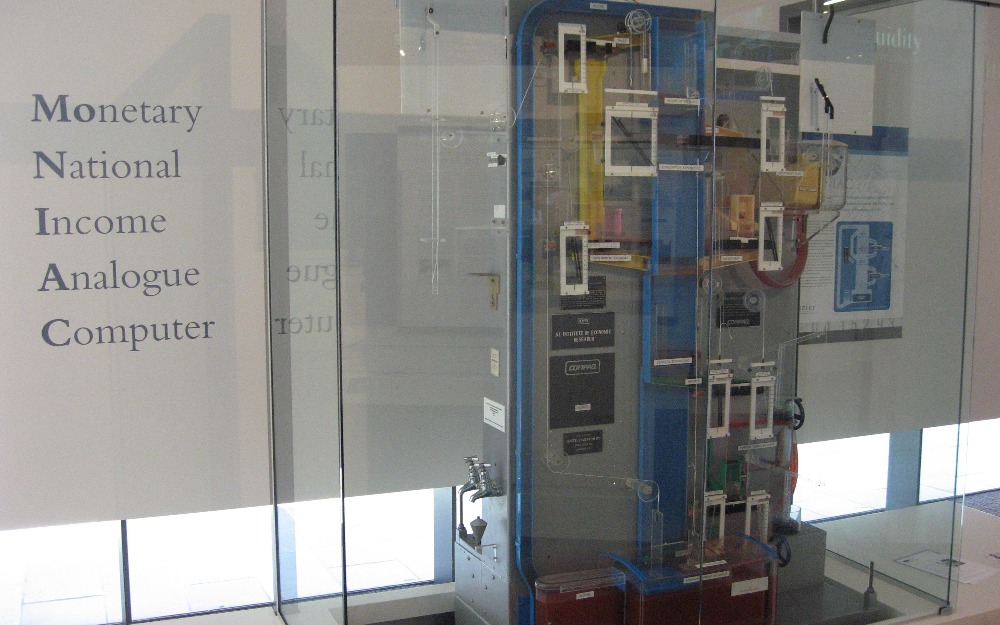
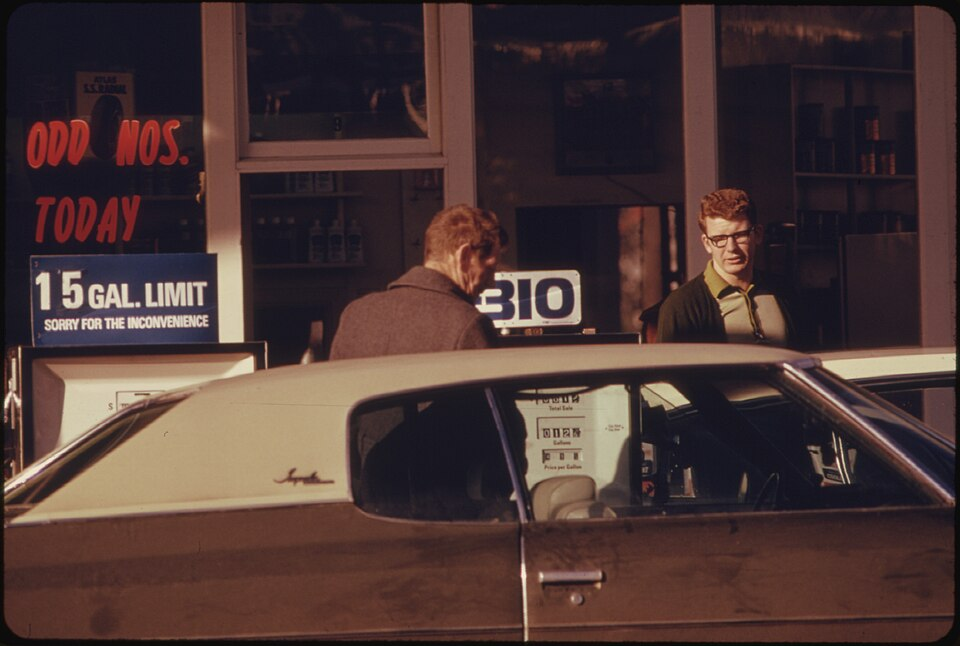
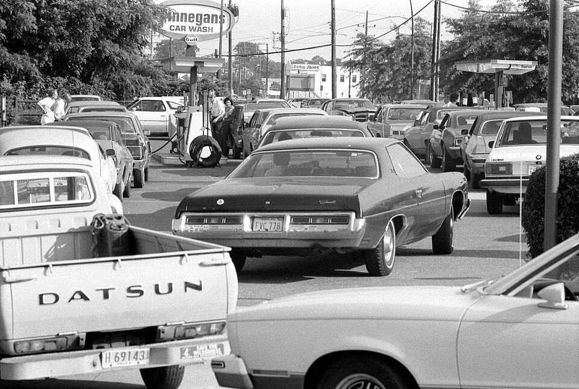

The Phillips Curve as History
Keynes · Phillips · the menu · the break · the critique
From the General Theory to the 2026 Nobel — and the telling that says most of this story never happened
The story in one table
| When | What happened | Why it matters |
|---|---|---|
| 1936 | Keynes publishes the General Theory | Demand management; the price level treated as an institutional datum |
| 1958 | Phillips plots UK data, 1861–1957 | A correlation, with no theory behind it |
| 1960–64 | Samuelson–Solow: a menu; the 1964 US tax cut | The profession believes it and acts on it |
| 1967–68 | Phelps and Friedman add expectations | The natural-rate hypothesis — predicted the break |
| 1970–79 | Inflation and unemployment rise together | The old line is dead; the vertical LRPC is bolted on |
| 1976 | Lucas: estimated relations are not structural | Learn the rule → the rule stops working |
| 1980s–90s | Volcker; then inflation targets, independent banks | Rebuild: manage expectations, not the curve |
| 2026 | Hall and Woodford win the Nobel | The rebuild gets its microfoundations — and its official history |
Before Keynes: the classical view
Laissez-faire
Markets clear on their own. Government should stand back, and budgets should balance.
Say’s Law
Supply creates its own demand — a general glut of goods is impossible.
Downturns are temporary
Falling wages and prices restore full employment — in the long run.
Keynes: what he wrote about prices
Phillips: a scatter, not a menu
The paper
Unemployment and money wage rates, UK 1861–1957 — Economica, November 1958.
What he plotted
Wage growth, Δw / w — not inflation. His curve fits 1861–1913; the post-1948 points sit to the right of it.
What he did about that
Called it a time lag, then re-plotted unemployment lagged seven months to pull the points back onto the curve.

A. W. Phillips
The MONIAC, 1949Samuelson and Solow: the curve becomes a policy tool
Two moves, one paper
US data, and the axis swapped from wages to the price level — so the same shape now reads as inflation against unemployment.
The caveat, p. 193
“It would be wrong to think that our Figure 2 menu … will maintain its same shape in the longer run.” They sketched a low-pressure economy shifting it down, or structural unemployment shifting it up.
Phelps and Friedman: expectations, and the natural rate
The natural rate, in one line
The rate “ground out by the Walrasian system of general equilibrium equations”. Inflation moves unemployment only while it is a surprise: π = πe − 1.25(u − u*).
So who caused the stagflation? Two suspects.
Suspect 1 — the oil shock
SRAS shifts left, so output falls while prices rise — that is why π and u jumped together in 1974 and 1979. No demand story can do that. But one shock shifts the curve only once.
Suspect 2 — policy and expectations
Each time unemployment rose, policy eased again, so inflation never fell back to where it started. πe ratcheted up and the SRPC kept shifting. That is what turns a bad year into a lost decade.
What the data says: a ratchet, not a spike
Already 5.4% in 1969
That is before any oil shock. And after 1974 inflation fell only to 5.8% — not back to 1.6%. The real rate was negative in 1974–75 and 1979–80.
One oil shock, four central banks
1973–82 average inflation: W. Germany 5.2%, US 8.8%, UK 14.2%, Italy 16.3%. Same oil, different inflation.
Lucas: the critique that ended the easy version
Ricardian equivalence: the fiscal twin of the same critique
David Ricardo · 1772–1823
His Principles (1817) put the argument in writing — and then doubted it.
Fund a war with £20m at once, £1m a year for ever, or £1.2m for 45 years — “in point of economy, there is no real difference in either of the modes.”
Robert Barro · b. 1944
With Lucas and Sargent, a founder of new classical macroeconomics.
1974, Journal of Political Economy: “Are Government Bonds Net Wealth?” A bond-financed tax cut is only a future tax — not wealth, so AD does not move.
The rebuild: credibility, rules — and the wave that followed
The Nobel for the microfoundations
Hall: the household
Consumption as an intertemporal choice (1978). Households smooth spending, so a known future income change moves today’s spending before the money arrives.
Woodford: the firm
Prices are written down in advance, so what the central bank says about the future is already policy today (Interest and Prices, 2003).
The story the Nobel tells
What it assumes
That policy had been run off a stable curve, that the 1970s exposed it, and that the rebuild was a lesson learned.
What it does not claim
Nothing about who believed what. It is a summary of the models, not a reading of the archive.

Queuing for petrol, 1974
Queuing for petrol, 1979The other telling: a myth?
| The story as it is told | What the record shows |
|---|---|
| Phillips discovered a striking trade-off | Not new in 1958 |
| Samuelson–Solow sold it as a menu | Hardly propounded a trade-off at all |
| Governments inflated to buy jobs | Rarely mentioned in policy discussion |
| Friedman and Phelps added expectations | Expectations were commonplace before 1968 |
| The 1970s exposed the naive Keynesians | Oil and commodity prices are overlooked |
The L-shaped supply curve — and the Phillips curve it implies
So which story is true?
Not in dispute
The 1961–69 relation, the break after 1970, stagflation, the vertical LRPC at the resting point π = πe, the Lucas critique, microfoundations, the 2026 prize.
In dispute
Who believed what, who acted on it — and whether the break was a profession’s mistake or a story told afterwards.
The story on one line
All the Nobel prizes this lesson touched
| Nobel | Laureate | Why they won it | Why this lesson mentions them |
|---|---|---|---|
| 1970 | Paul A. Samuelson | static and dynamic economic theory | the 1960 paper that made the curve a “menu” |
| 1976 | Milton Friedman | consumption, monetary history, stabilisation policy | 1968: expectations and the natural rate |
| 1986 | James M. Buchanan | the contractual basis of economic decisions | he named “Ricardian equivalence” (1976) |
| 1987 | Robert M. Solow | the theory of economic growth | the other half of the 1960 paper |
| 1995 | Robert E. Lucas, Jr. | rational expectations | 1976: an estimated relation is not structural |
| 2004 | Edward C. Prescott | time consistency; what drives business cycles | new classical: rules, not discretion |
| 2006 | Edmund S. Phelps | intertemporal tradeoffs in macroeconomic policy | 1967: expectations, before Friedman |
| 2011 | Thomas J. Sargent | cause and effect in the macroeconomy | new classical: seen policy moves nothing |
| 2026 | Robert E. Hall & Michael Woodford | microeconomic foundations of stabilisation | where this lesson ends: the rebuild gets its foundations |
Thank you!
A curve is easy to draw. Knowing who believed it, and why you were told they did, is the harder part.